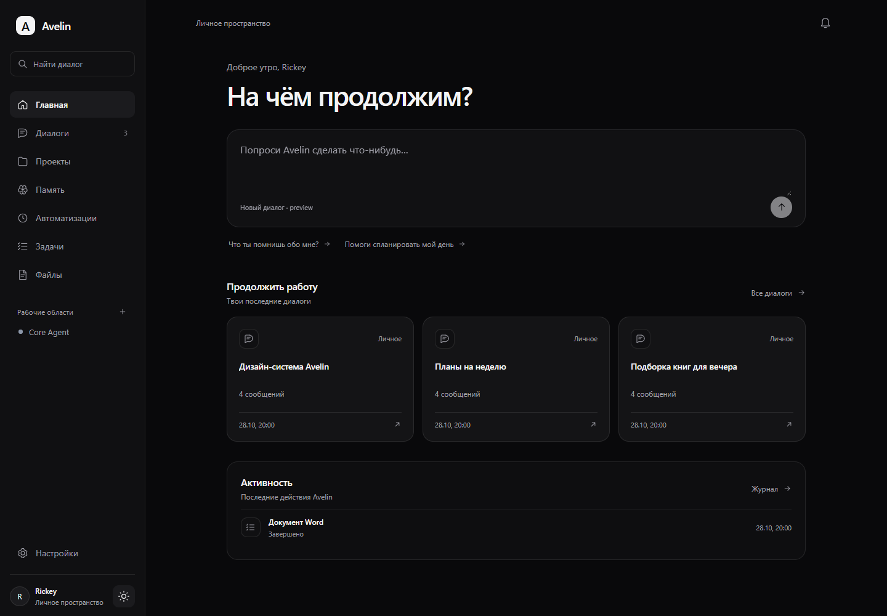

Продолжай с того места, где остановился
История диалогов и проекты остаются рядом, когда задача растягивается на дни.
Личный AI-агент
Avelin объединяет диалоги, управляемую память, инструменты и выбор моделей в одном спокойном рабочем пространстве.
Desktop и web — скоро · мобильные приложения — в плане

Рабочее пространство
История диалогов и проекты остаются рядом, когда задача растягивается на дни.
Документы и другие созданные файлы появляются в ответе как понятные карточки для скачивания.
Avelin умеет работать с файлами, web-источниками и управляемыми действиями с подтверждением.
Управляемая память
Avelin отделяет долговременные предпочтения от контекста конкретного чата. Записи можно просматривать, изменять, отзывать и удалять.
Любит практичные решения и короткие понятные инструкции.
Развивает Avelin как личного агента и рабочую экосистему.
Модели
Локальные и облачные модели можно выбирать под задачу. Резервные маршруты помогают сохранить работу при временной недоступности провайдера.
Приватность
Чувствительные и внешние действия не прячутся внутри ответа.
Файлы, статусы и отчёты остаются доступными после выполнения.
Домашний preview по умолчанию остаётся доступен только на твоём компьютере.
Первая версия готовится к закрытому тестированию.